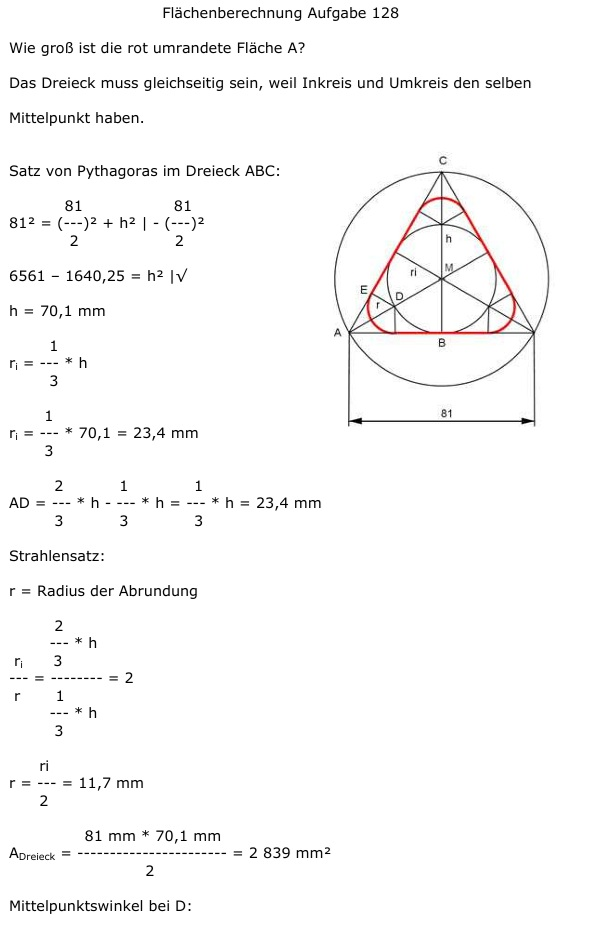

Aufgabe 128 Wie groß ist die rot umrandete Fläche A?  Das Dreieck muss gleichseitig sein, weil Inkreis und Umkreis den selben Mittelpunkt haben. Satz von Pythagoras im Dreieck ABC: 81 81 812 = (---)2 + h2 | -(---)2 2 2 6561 – 1640,25 = h2 |√ h = 70,1 mm 1 ri = --- * h 3 1 ri = --- * 70,1 = 23,4 mm 3 2 1 1 AD = --- * h - --- * h = --- * h = 23,4 mm 3 3 3 Strahlensatz: r = Radius der Abrundung 2 --- * h ri 3 ---- = -------- = 2 r 1 --- * h 3 ri r = ---- = 11,7 mm 2 81 mm * 70,1 mm ADreieck = ------------------ = 2 839 mm2 2 Mittelpunktswinkel bei D: 2 * (180° - 90° – 30°) = 120° Bogen b der Abrundung = 2 * π * 11,7 mm * 120° = ------------------------ = 24,5 mm 360° Fläche des Kreissektors um D: b * r ASektor = ------ = 2 24,5 mm * 11,7 mm = --------------------- = 143,3 mm2 2 Satz von Pythagoras im Dreieck AED: AD2 = r2 + AE2 | -r2 AE2 = 23,42 - 11,72 |√ AE = 20,3 mm Abgerundete Fläche A: AE * r A = ADreieck – 6 * -------- + 3 * ASektor 2 20,3 mm * 11,7 mm A = 2 839 mm2 - 6 * -------------------- + 2 + 3 * 143,3 mm2 A = 2 39 mm2 - 712,5 mm2 + 429,9 mm2 = 2556,4 mm2 A = 25,6 cm2